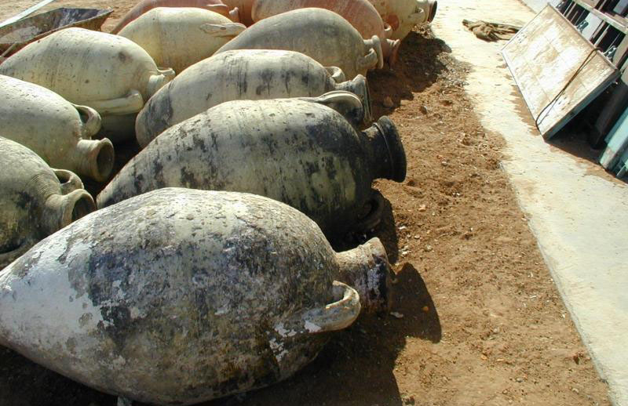
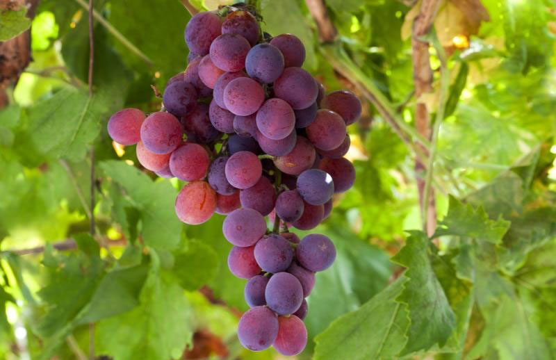
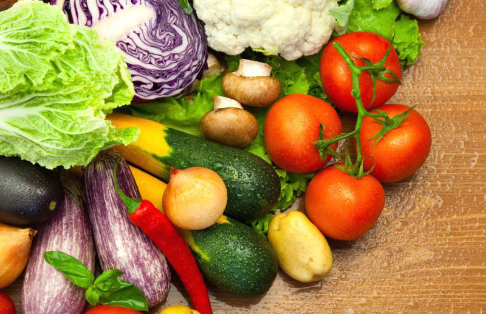

You will find an exceptional array of premium, fresh olive oils from all over the globe as well as a satisfying selection of balsamic vinegars.
You can try any and all of our fused and infused olive oils, varietals, dark andw hite balsamics, and our specialty oils and vinegars.
You are sure to feel relaxed and unhurried in this warm, inviting space. You can take your time discovering the nuances of taste present in the varietals (extra virgin olive oils); the incredible character of flavors such as Tuscan Herb Olive Oil, Sicilian Lemon White Balsamic, and many more. Check out our imported Italian pesto and jams, as well as an ever-changing array of sea salts and spices, and mustards. Click below to see our products!
  